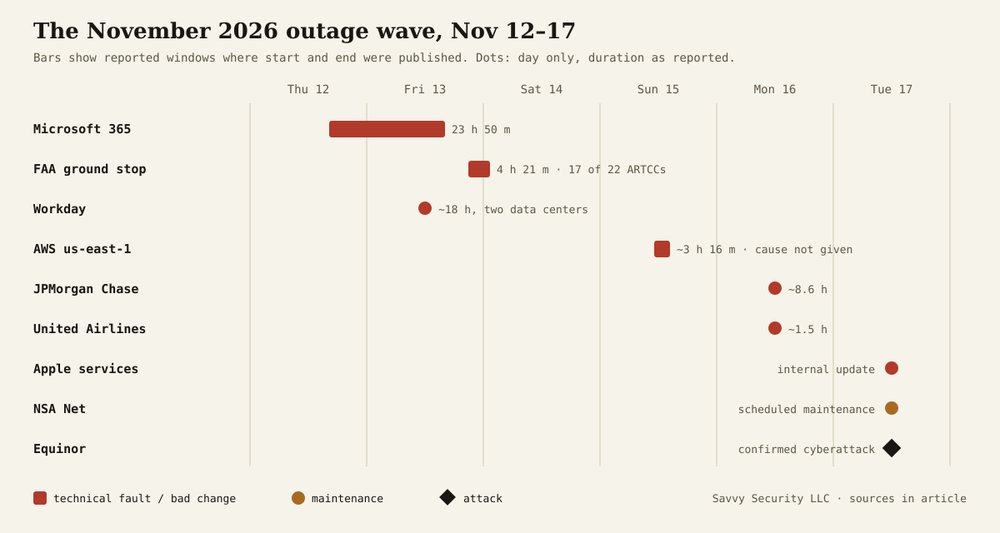
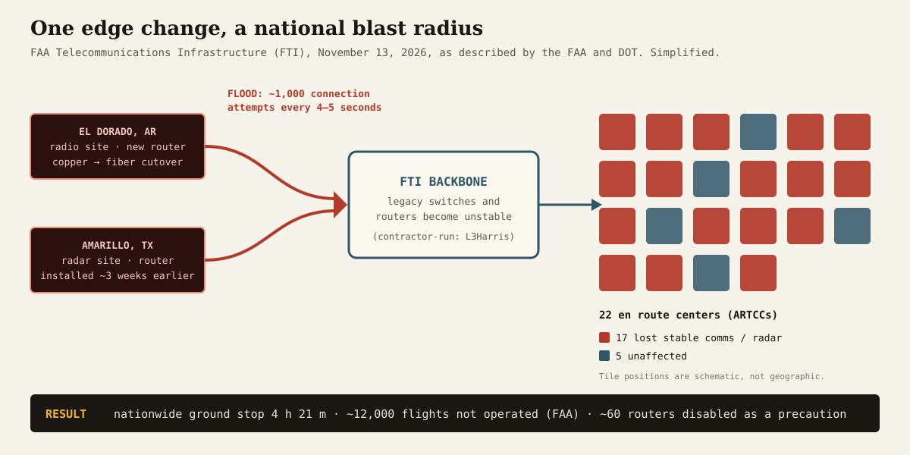
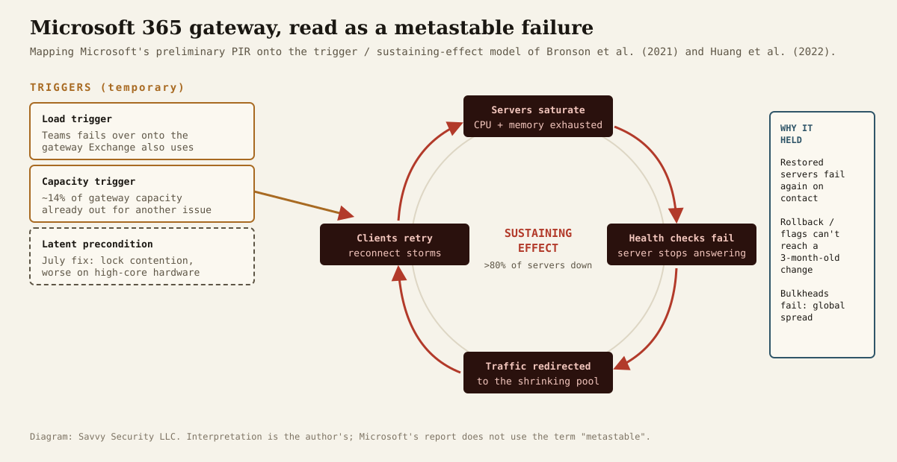
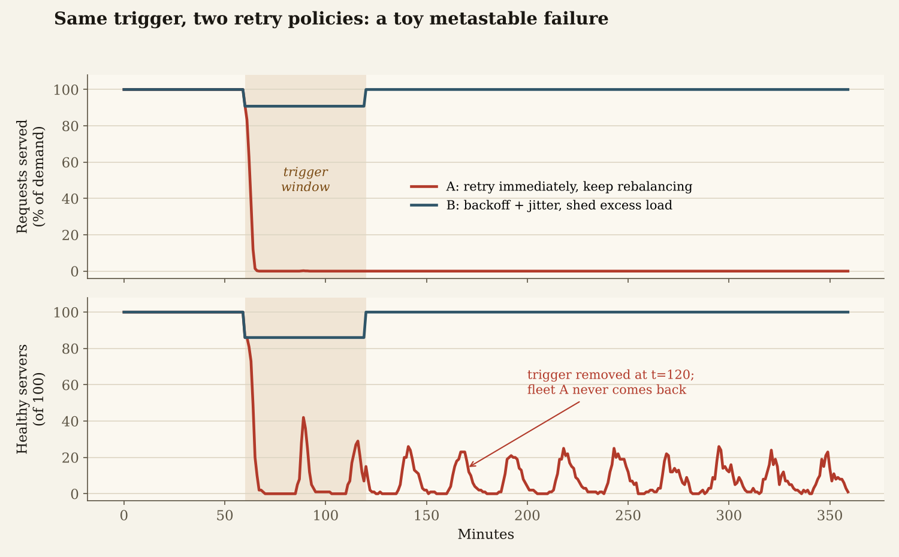

Savvy Security LLC · Research
No Adversary Required
Between November 12 and 17, 2026, email, air traffic control, payroll, cloud sign-in, banking, an airline, Apple and the NSA all went down. Almost none of it was an attack. A research read of the outage wave, and of the attackers who moved into the gap.
Abstract
In six days, at least nine organizations reported significant outages. The largest, Microsoft 365, ran 23 hours and 50 minutes. The most dramatic, a nationwide FAA ground stop, was the longest since September 11, 2001. Every organization that gave a cause blamed something internal: a latent defect, a router, an update, maintenance. The one confirmed cyberattack in the window, at Equinor, did not touch production.
This piece reads the two best-documented incidents against the systems literature. The Microsoft gateway collapse fits the metastable failure model of Bronson et al. (2021) and Huang et al. (2022) almost line for line, including both trigger types. The FAA event is a textbook failure-domain problem: one edge change reached 17 of 22 en route centers. Neither needed an adversary. Adversaries showed up anyway, within hours, as phishing that quoted Microsoft’s real incident number.
The argument: for most organizations, the outage itself is not the security event. The confusion around it is.
1 · The wave
It started on Thursday, November 12, when Microsoft’s networking gateway for Microsoft 365 began falling over. By Tuesday the 17th the list had grown to include the FAA, Workday, Amazon Web Services, JPMorgan Chase, United Airlines, Apple, the NSA’s classified internal network and the Norwegian energy company Equinor. DarkOwl’s weekly roundup summed up the uncomfortable part: almost none of these were reported as attacks, and the companies involved blamed config changes, buggy hardware and aging copper (DarkOwl, 2026).

| Date (2026) | Organization | Impact | Stated cause |
|---|---|---|---|
| Nov 12–13 | Microsoft 365 | Exchange Online mailboxes unreachable worldwide; Teams, Copilot, Defender and others degraded. 23 h 50 m. | Latent gateway defect, traffic surge and missing capacity (Microsoft, 2026). |
| Nov 13 | FAA | Nationwide ground stop, 4 h 21 m. About 12,000 flights not operated. | New router flooded the FAA telecom network during copper-to-fiber work (Axios, 2026; AIAA, 2026). |
| Nov 13–14 | Workday | HR and payroll, about 18 hours, two data centers. | Not cybersecurity-related, per Workday (FourWeekMBA, 2026). |
| Nov 15 | AWS us-east-1 | IAM Identity Center sign-in, sign-ups and some connections failed for about three hours. | None given (Pillitteri, 2026). |
| Nov 16 | JPMorgan Chase | Online banking lockouts, about 8.6 hours. | A software bug in on-premise hardware (FourWeekMBA, 2026). |
| Nov 16 | United Airlines | About 1.5 hours; pilot weight-and-balance tools affected. | Technology issue, not cyber (DarkOwl, 2026). |
| Nov 17 | Apple | iCloud sign-in, App Store, Music, Pay and others. | Internal update; not a cyberattack (FourWeekMBA, 2026). |
| Nov 17 | NSA Net | Classified internal communications degraded. | Scheduled maintenance (FourWeekMBA, 2026). |
| Nov 17 | Equinor | Certain IT systems; production unaffected. | Cyberattack confirmed by Equinor (FourWeekMBA, 2026). |
Schwab, Marriott, the National Weather Service and NTT Docomo also reported problems in the same window (DarkOwl, 2026; IBTimes UK, 2026). I have left them out where causes or durations were not published.
For scale: the background rate of outages is high. ThousandEyes counted 419 global network outage events across ISPs, cloud, collaboration and edge networks in the week of November 9–15, and 450 the week before (Network World, 2026a). Most never make the news. The difference this week was that several hit services ordinary people touch every day, back to back, and the press started keeping a list.
2 · Case study A: the router flood
At about 3:30 PM Eastern on Friday, November 13, multiple FAA Air Route Traffic Control Centers started losing communications, radio frequencies and radar (GovInfoSecurity, 2026). The FAA called a nationwide ground stop and lifted it at 8:15 PM, the longest nationwide ground stop since the 2001 attacks (Business Traveller, 2026).
The FAA’s own account is unusually specific. Its network was flooded at a rate of 1,000 connection attempts every 4 to 5 seconds, which destabilized aircraft communications and radar feeds (Axios, 2026). Investigators traced the traffic to two sites: a radio facility in El Dorado, Arkansas, where contractor L3Harris had just installed a new Juniper router as part of a copper-to-fiber conversion, and a radar site in Amarillo, Texas (KATV, 2026; AVweb, 2026). The instability reached 17 of the FAA’s 22 en route centers and spread into several approach control facilities (AeroCorner, 2026). The FAA disabled both routers and roughly 60 others as a precaution, and paused new router installs (ABC17, 2026; Fox 5 Atlanta, 2026).

The rate is small. The blast radius is not. A thousand connection attempts every four to five seconds works out to roughly 200–250 attempts per second. Modern carrier gear shrugs that off. That the legacy backbone did not points to control-plane exhaustion on old equipment, plus the absence of per-port connection rate limits or control-plane policing at the edge that would have kept one misbehaving device inside its own failure domain. This is my inference from the published numbers, not an FAA finding.
Transition periods are attack surface. A TDM-to-IP migration means two network generations run side by side, with assumptions from the old one (few devices, trusted links, little chatter) meeting behavior from the new one. The Amarillo router had reportedly been in place about three weeks before it joined the flood (Aviation Outlook, 2026). That is a latent condition waiting for a trigger, the same shape as the Microsoft incident below.
Attribution moved fast here, and in the right direction. The FBI gave technical help but said it had not taken possession of any equipment (Fox 5 Atlanta, 2026). Officials ruled out hackers and AI, which mattered because the FAA had extended its AI-assisted traffic planning platform, SMART, to all 22 en route centers just three days earlier (BankInfoSecurity, 2026). That is exactly the kind of coincidence that fuels bad theories, and exactly why section 6 exists.
3 · Case study B: the gateway loop
I covered the Microsoft 365 outage for a general audience in The Front Door Fell Over. Here is the short version for researchers, built from Microsoft’s preliminary Post Incident Report for EX1550543 / MO1550821, dated November 15 (Microsoft, 2026).
- Latent precondition. A fix for the Microsoft 365 networking gateway servers, deployed from July, contained lock contention in an internal Windows process that could exhaust CPU and memory under certain load. Lab load tests missed it because their traffic mix and hardware were not representative; the contention gets worse on machines with more cores and newer hardware.
- Load trigger. About 15 hours before the outage, automated failover moved Teams traffic onto the primary gateway that also fronts Exchange Online.
- Capacity trigger. Nearly 14% of gateway capacity was already out of service for an unrelated reason.
- Amplification. As servers stopped responding, automatic redirection pushed their load onto the survivors, which then failed too. The defect reached much of the fleet in under two hours; at the low point more than 80% of servers were unresponsive. Regional bulkheads failed because of “a separate issue” the preliminary report does not describe.
- Sticky recovery. Restored servers stayed healthy briefly, then failed again as soon as they took traffic. Rollback, flighting and feature flags could not quickly revert a three-month-old change. Engineers ended up patching and returning servers in batches, sometimes half a region at a time.

Two things in the analysis around the report are worth a researcher’s attention. First, the warning signs were there. Frank Dickson of Dickson Research pointed out that automation quietly absorbed isolated server failures for about 15 hours, and the high-priority alert fired only after the problem had grown (Network World, 2026b). Second, Mike Wilkes of Aikido Security noted that Microsoft’s status page depended on the same infrastructure that failed (Network World, 2026b). Both are textbook cases from the literature in the next section.
The triggers were gone by evening. The failure was not. That is the signature of metastability.
4 · What the research says
Metastable failures
Bronson, Aghayev, Charapko and Zhu (2021) gave a name to a pattern operators had been calling retry storms, death spirals and persistent congestion. A metastable failure is a state of permanent overload with very low goodput that persists after the trigger that caused it is removed. The system has a stable “good” state and a stable “bad” one, and a temporary push can tip it from one to the other.
Huang et al. (2022) went looking for these in the wild. Scanning more than 600 public incident reports, they studied 22 metastable failures in depth and found that at least 4 of 15 major AWS outages in the preceding decade were metastable. They refined the model into two kinds of trigger, load spikes and capacity drops, and two kinds of amplification, extra work (retries, timeouts) and further capacity loss. The Microsoft incident has both triggers, the Teams failover and the 14% capacity hole, and both amplifiers, client reconnects and servers locking up under redistributed load. Very few public postmortems map this cleanly onto the taxonomy.
To make the mechanism concrete, I wrote a small simulation. It is a toy, not a model of Microsoft’s fleet: 100 servers, a one-hour trigger that combines a 25% load increase with 14% of capacity offline, and lock-contention-style efficiency loss when a server is pushed past capacity. Policy A retries immediately and keeps rebalancing onto survivors. Policy B uses jittered backoff, lets clients give up, and has servers shed excess load quickly instead of accepting it.

# the two lines that decide which world you live in (from metastable_sim.py) if policy == "A": retries = backlog * 1.0 # everyone retries at once else: retries = backlog * rnd.uniform(0.15, 0.35) # jittered backoff ... if policy == "B" and per > 0.95: accepted = 0.95 * healthy # shed, don't drown
Run it yourself: python3 metastable_sim.py out.json. Standard library only.
Gray failure and differential observability
Huang, Guo, Zhou and colleagues at Microsoft Research and Azure argued in 2017 that the big cloud breakdowns tend to come from subtle faults that defy quick detection, not clean crashes. Their key concept is differential observability: the system’s own failure detectors can report healthy while the applications using it are suffering (Huang et al., 2017). They wrote from first-hand Azure experience that gray failure was behind most of the cloud incidents they saw.
The November gateway outage has two clear instances. For 15 hours, automation saw individual server failures as routine and handled them, while the fleet drifted toward collapse. Then, during recovery, servers passed health checks and failed the moment real traffic arrived. In both cases the detector and the client disagreed about what “healthy” meant.
Outages are mostly self-inflicted, and that is old news
Gunawi et al. (2016) built a cloud outage study from public reports covering 32 popular internet services and catalogued root causes, durations and fixes. Upgrades, configuration changes and load surges recur throughout the catalogue. The lesson I take from it is that redundancy and failover protect you from broken parts, not from bad changes to the machinery that manages those parts. November 2026 is a fresh dataset for the same conclusion: a fix, a failover, an install, an update, a maintenance window.
Concentration turns local faults into national ones
Kashaf, Sekar and Agarwal (2020) measured how the Alexa top 100,000 websites depend on third-party DNS, CDN and certificate authority providers. They found 89% critically depend on at least one such provider, that the top three providers in each category could affect 50–70% of those sites, and that indirect dependencies (a CDN that relies on someone else’s DNS, for example) amplify a popular provider’s reach by up to 25 times. Kumar et al. (2021) extended this kind of analysis across countries and found centralization concerns go well beyond the US.
The FAA backbone and Microsoft’s gateway are the private-network versions of the same finding. The FTI network is one contractor-run backbone for the national airspace. Exchange Online could not fail away from the affected gateway “for scale reasons,” while Teams, SharePoint and OneDrive could (Microsoft, 2026). Concentration is not a bug someone forgot to fix. It is what scale buys, and the bill arrives as blast radius.
5 · The adversary in the gap
No attacker caused the Microsoft outage. Attackers used it anyway, and fast. On November 13, while recovery was still under way, Microsoft Threat Intelligence observed a credential phishing campaign posing as Microsoft 365 service-health notices. The emails cited EX1550543, the real incident ID, claimed that messages held during the disruption would be deleted within 24 hours, and pushed a large “RESTORE MESSAGES” button (SecurityWeek, 2026; CSO Online, 2026; Fortra, 2026). Field Effect reported outage-themed texts and fake IT support calls alongside the emails (Field Effect, 2026).
Real incident IDs are a credibility exploit. Service incident identifiers are published on status pages and repeated in hundreds of news stories. An attacker who quotes one borrows the authority of the real incident. Users had been told all day that EX1550543 was real; the lure was built on top of that.
Outages degrade the defender, too. When email is down, help desks are flooded, users expect odd messages, and security teams lose their usual channels. Defender, part of Microsoft’s own security stack, was in the list of affected services (Microsoft, 2026). An outage is a window of reduced detection and increased user compliance, whether or not anyone planned it.
The same week carried real security news that competed for the same attention. DarkOwl’s roundup lists an exploited Outlook zero-day (CVE-2026-124194) that leaks a victim’s NTLMv2 hash when a crafted message file is opened, added to CISA’s Known Exploited Vulnerabilities catalog with a November 24 remediation deadline, which is today. It also lists an exploited Chrome use-after-free, a CVSS 9.8 Apache HTTP Server RCE, and supply-chain compromises at Optimizely and ConnectWise ScreenConnect (DarkOwl, 2026). Every hour spent on an outage that turned out to be a router is an hour not spent on those.
Then there is the information layer. A viral claim that the internet would be switched off on November 17 traced back to a single anonymous post and was debunked by Ukraine’s Center for Countering Disinformation (TopTen Media, 2026). After the wave, posts warning that America would “go dark” in 15 days spread using the list of real outages as evidence (IBTimes UK, 2026). Outage clusters are raw material for influence operations whether or not any adversary touched a server.
Warnings are good; queries are better. If you run Microsoft Defender for Office 365, something like this finds lures that lean on real incident IDs or the “held messages” story. Adjust the sender allowlist to the domains your tenant genuinely receives service notices from.
// KQL: outage-themed lures, Defender for Office 365 advanced hunting EmailEvents | where Timestamp > datetime(2026-11-12) | where Subject has_any ("EX1550543", "MO1550821") or Subject matches regex @"(?i)(held|pending|quarantined)\s+(messages|emails)" | where SenderFromDomain !in~ (dynamic(["your-verified-notice-domains"])) | join kind=leftouter (EmailUrlInfo | project NetworkMessageId, UrlDomain) on NetworkMessageId | summarize recipients=dcount(RecipientEmailAddress), urls=make_set(UrlDomain) by SenderFromAddress, Subject, DeliveryAction
A starting point, not a finished rule. Generalize the incident IDs into a watchlist you update whenever a provider you depend on opens a major incident.
6 · Attribution discipline
The most common question I got that week was some version of “Is this a cyberattack?” It is the right question asked at the wrong time. In the first hours, nobody outside the affected organization knows, and the organization often does not know either. Here is the evidence ladder I use, from weakest to strongest.
| Signal | Weight | November example |
|---|---|---|
| Several outages close together | Weak | The whole wave. Clusters happen without coordination (section 7). |
| Early vendor statement “no indication of malicious activity” | Moderate | Microsoft, Apple, Chase and United all said this early. Useful, but early statements are sometimes revised. |
| Mechanism published with specifics | Strong | FAA’s connection rate and named sites; Microsoft’s three-factor PIR with timestamps. |
| Behavior that fits the mechanism | Strong | Microsoft’s recovery re-failure matches a metastable loop; a flood that stopped when two routers were disabled matches a device fault. |
| Law enforcement posture | Supporting | FBI assisting at the FAA but seizing no hardware. |
| Explicit attack disclosure | Strong | Equinor said plainly it had detected an ongoing cyberattack. |
The asymmetry matters. A wrong “attack” call sends incident responders chasing ghosts and hands influence operators a story. A wrong “just an outage” call can miss something like the 2016 Mirai attack on Dyn, which looked like an outage to most of the internet. Hold both hypotheses, and let mechanism evidence, not timing, move you.
7 · Why clusters happen without a conspiracy
These are hypotheses, not findings. Each is testable with outage data like the ThousandEyes series, and I would like to see someone do it.
- Change seasonality. Changes cluster in time. Patch Tuesday landed on November 10 with a very large release, the Microsoft outage began two days later (Krebs on Security, 2026), and many organizations push work before year-end change freezes. More changes in the same weeks means more latent defects meeting their triggers in the same weeks. The Microsoft defect itself was not part of Patch Tuesday, which is a useful caution against reading too much into timing.
- Reporting bias. After a headline outage, journalists and the public watch for more, so smaller incidents that would normally pass unnoticed become stories. The underlying rate barely moved (419 events that week versus 450 the week before), but the attention did.
- Hidden shared dependencies. Some incidents may share a component nobody has disclosed: a vendor, a firmware line, an upstream network. None of the published causes this month point to one, but Kashaf et al. (2020) showed how often indirect dependencies are invisible until they fail.
- Base rates. At hundreds of global outage events per week, a week with several famous ones is not rare enough by itself to need an explanation.
8 · What to do with this
For defenders
- Treat a provider outage as a phishing alert. When a provider you depend on opens a major incident, push a short notice to staff: the provider will not ask you to restore messages or sign in through an email link; check status through a bookmarked page.
- Keep an out-of-band channel. Your incident comms should not live only on the platform that is down. Microsoft’s own status page shared fate with the outage (Network World, 2026b).
- Inventory your concentration. You cannot measure risk you have not mapped. Start with the DNS and CDN providers behind your own domains:
# who does my business actually depend on? (Kashaf et al. style, crude) while read d; do echo "== $d" echo " NS: $(dig +short NS $d | tr '\n' ' ')" echo " MX: $(dig +short MX $d | tr '\n' ' ')" echo " www -> $(dig +short CNAME www.$d)" done < domains.txt
If every line ends at the same two or three companies, that is your blast radius.
For builders
- Retry with backoff, jitter and a budget. The simulation above is the whole argument. Brooker (2019) covers the practice; the Google SRE book chapter on cascading failures covers the theory (Ulrich, 2016).
- Shed load early and cheaply. A fast rejection is better than a slow acceptance that drags the server under. Admission control is what kept Policy B alive.
- Rate-limit the control plane at the edge. One device should not be able to send a national backbone more connection attempts than it can absorb. Per-port and per-peer limits keep a fault in its own failure domain.
- Test on production-shaped hardware and traffic. Microsoft’s defect hid because the test fleet had fewer cores than production (Microsoft, 2026).
- Make automation report patterns, not just fix events. Fifteen hours of quietly replaced servers was a signal. Healing that hides a trend is gray failure by design.
- Practice the fleet-wide recovery. Microsoft said its automated recovery was not designed for an outage this broad. Recovery from a metastable state usually needs traffic held back, not just servers restarted.
For researchers
Open questions I think are worth a paper: measuring how quickly outage-themed lures appear after public incident IDs are posted; whether change-freeze calendars predict outage clustering in the ThousandEyes or Cloud Uptime Archive data (Cloud Uptime Archive, 2025); and how often vendor “not an attack” statements are later revised.
Still open
| Question | Status | What we have |
|---|---|---|
| Why Microsoft’s regional bulkheads failed | Unknown | The preliminary report cites only a separate issue. A final report was due November 20; I have not seen a public copy, so this piece relies on the preliminary one. |
| Faulty router or installation error at the FAA | Under investigation | Officials have not said which (Business Traveller, 2026). |
| Cause of the AWS us-east-1 incident | Not published | AWS gave no cause in its updates (Pillitteri, 2026). |
| Any shared cause across the wave | No evidence | Every published cause is internal and different. Officials say the incidents are unrelated. |
I will update this post as final reports land.
The outage is rarely the security event. The confusion around it is.
From the book
More on incidents that changed how we build and defend systems in A Hacker’s Guide to Survive by Malcolm R. Smith.
📖 Get A Hacker’s Guide to Survive on Amazon →
Or read Chapter 1 free first.
Sources
Peer-reviewed and scholarly
- Bronson, N., Aghayev, A., Charapko, A., & Zhu, T. (2021). Metastable failures in distributed systems. Proceedings of the Workshop on Hot Topics in Operating Systems (HotOS ’21), ACM. doi:10.1145/3458336.3465286.
- Huang, L., Magnusson, M., Muralikrishna, A. B., Estyak, S., Isaacs, R., Aghayev, A., Zhu, T., & Charapko, A. (2022). Metastable failures in the wild. 16th USENIX Symposium on Operating Systems Design and Implementation (OSDI 22). usenix.org.
- Huang, P., Guo, C., Zhou, L., Lorch, J. R., Dang, Y., Chintalapati, M., & Yao, R. (2017). Gray failure: The Achilles’ heel of cloud-scale systems. Proceedings of HotOS ’17, 150–155. doi:10.1145/3102980.3103005.
- Gunawi, H. S., Hao, M., Suminto, R. O., Laksono, A., Satria, A. D., Adityatama, J., & Eliazar, K. J. (2016). Why does the cloud stop computing? Lessons from hundreds of service outages. Proceedings of the Seventh ACM Symposium on Cloud Computing (SoCC ’16), 1–16. doi:10.1145/2987550.2987583.
- Kashaf, A., Sekar, V., & Agarwal, Y. (2020). Analyzing third party service dependencies in modern web services: Have we learned from the Mirai-Dyn incident? ACM Internet Measurement Conference (IMC ’20). doi:10.1145/3419394.3423664.
- Kumar, R., Asif, S., Lee, E., & Bustamante, F. E. (2021). Third-party service dependencies and centralization around the world. arXiv:2111.12253. arxiv.org.
- Cloud Uptime Archive (2025). Open-access availability data of web, cloud, and gaming services. arXiv:2504.09476. arxiv.org.
- Ulrich, M. (2016). Addressing cascading failures. In Beyer, Jones, Petoff & Murphy (Eds.), Site Reliability Engineering: How Google Runs Production Systems. O’Reilly. sre.google.
- Brooker, M. (2019). Timeouts, retries, and backoff with jitter. Amazon Builders’ Library. builder.aws.com.
Primary incident documents
- Microsoft (2026). Preliminary Post Incident Report for Microsoft 365, EX1550543 / MO1550821. November 15, 2026. Public mirror: next.ink (PDF).
Reporting and analysis (checked November 24, 2026)
- DarkOwl (2026). The week the internet broke: outages, zero-days and supply-chain attacks, November 10–17, 2026. November 19. darkowl.com.
- FourWeekMBA (2026). The November outage wave, explained: 9 failures, 7 causes. fourweekmba.com.
- Network World (2026a). 2026 network outage report and internet health check (ThousandEyes data). networkworld.com.
- Schuman, E. (2026). Microsoft outage: a cascading failure that started with an undetected bug. Network World (2026b). networkworld.com.
- Axios (2026). What we know about what caused the FAA’s nationwide ground stop. November 16. axios.com.
- AVweb (2026). Data surge linked to nationwide FAA outage. avweb.com.
- KATV (2026). El Dorado, Arkansas, at center of nationwide FAA communications breakdown. katv.com.
- AeroCorner (2026). FAA ground stop probe narrows to two routers in Texas and Arkansas. aerocorner.com.
- GovInfoSecurity (2026). Anatomy of the FAA ground stop: one backbone, one bad change. govinfosecurity.com.
- BankInfoSecurity (2026). FAA rules out AI, hackers behind US ground stop. bankinfosecurity.com.
- ABC17 / CNN (2026). FAA router outage coverage. abc17news.com.
- Fox 5 Atlanta (2026). FAA halting installation of new routers after communications failure caused nationwide ground stop. November 17. fox5atlanta.com.
- AIAA (2026). FAA identifies router malfunction behind nationwide ground stop (summarizing Aviation Week). November 16. aiaa.org.
- Business Traveller (2026). What caused the FAA shutdown. businesstraveller.com.
- Aviation Outlook (2026). Arkansas router grounded US flights and exposed the FAA single point of failure. aviationoutlook.com.
- Pillitteri, P. (2026). AWS down in US-EAST-1, sign-ins and sign-ups fail for over three hours. pasqualepillitteri.it.
- SecurityWeek (2026). Microsoft rules out cyberattack in outage, warns of phishing campaign. securityweek.com.
- CSO Online (2026). Hackers exploit Microsoft 365 outage to launch credential phishing campaign. csoonline.com.
- Fortra (2026). Threat actors exploit Microsoft 365 outage in credential phishing campaign. November 13. fortra.com.
- Field Effect (2026). Microsoft 365 outage theme drives credential phishing and support scams. November 13. fieldeffect.com.
- Krebs, B. (2026). Microsoft fixes nearly 1,100 security vulnerabilities. Krebs on Security. krebsonsecurity.com.
- IBTimes UK (2026). List of 13 major tech, banking, aviation outages fuels fears of US net shutdown. ibtimes.co.uk.
- TopTen Media (2026). November 17, 2026: Will the internet go down? topten-media.com.
Malcolm R. Smith writes on security architecture, threat modeling, and autonomous defense for Savvy Security LLC. He builds software as a prompt engineer on a used Chromebook, and is the author of A Hacker’s Guide to Survive.